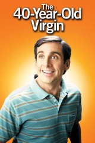

My Favorite movies
Types of my favorite movies
-
comedy
films that make people laugh.
- the 40-year-old virgin (2005)
- 21 jump street (2012)
- friends (1994 - 2004)
-
Crime
films that involve detectives, gangsters,criminals, fugitives, or inmates.
- The Godfather (1972)
- Pulp Fiction (1994)
- The Dark Knight (2008)
- The Silence of the Lambs (1991)
- The Departed (2006)
-
Sci-Fi
films that explore science fiction.
- 2001: A Space Odyssey (1968)
- Star Wars (1977)
- Metropolis (1927)
- Godzilla (1954)
- Invasion Of The Body Snatchers (1956)
The top 3 of my favorite movies
-
21 JUMP STREET (2012)

Critics Consensus: A smart, affectionate satire of '80s nostalgia and teen movie tropes, 21 Jump Street offers rowdy mainstream comedy with a surprisingly satisfying bite. Synopsis: When cops Schmidt (Jonah Hill) and Jenko (Channing Tatum) join the secret Jump Street unit, they use their youthful appearances... [More] Starring: Jonah Hill, Channing Tatum, Brie Larson, Dave Franco Directed By: Phil Lord, Chris Miller
-
THE 40-YEAR-OLD VIRGIN (2005)
Critics Consensus: Steve Carell's first star turn scores big with a tender treatment of its titular underdog, using raunchy but realistically funny comedy to connect with adult audiences. Synopsis: Andy Stitzer (Steve Carell) is an amiable single guy who works at a big-box store. Living alone, 40-year-old Andy spends... [More] Starring: Steve Carell, Catherine Keener, Paul Rudd, Romany Malco Directed By: Judd Apatow
-
BOOKSMART (2019)

Critics Consensus: Fast-paced, funny, and fresh, Booksmart does the seemingly impossible by adding a smart new spin to the coming-of-age comedy. Synopsis: Academic overachievers Amy and Molly thought keeping their noses to the grindstone gave them a leg up on their high... [More] Starring: Kaitlyn Dever, Beanie Feldstein, Jessica Williams, Jason Sudeikis Directed By: Olivia Wilde